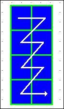
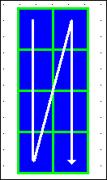
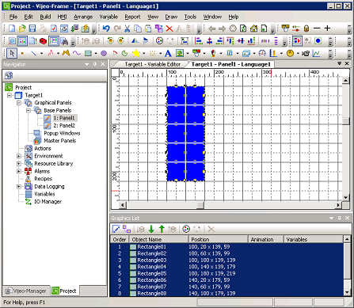

|
|
|
|
|
|
|
|
The Duplicate operation can also be performed with its corresponding Edit menu item or its corresponding Edit toolbar icon .
Right-click an object and click Duplicate to open the Duplicate dialog box.
Define the settings for the object's duplicates.
Number of Copy: The number of duplicates includes the selected object, set at the top-left position of the duplicated objects, and is limited by the panel size, object location, object size, spacing setting, etc.
Columns: Select the number of objects to display horizontally, for each row specified.
Rows: Select the number of objects to display vertically, for each column specified.
Increase Variable Name, Array Index, and Device Address: Available only when a variable is associated with the selected object. When selected, you can then select either X or Y to increment the object's name and device address in either horizontal or vertical succession. Do not select this check box if you want the duplicates to retain the selected object's original name and device address.
X direction: Enter a number to increment the variable, variable array, or device address associated with the selected object, in horizontal succession, when an object is duplicated.

Y direction: Enter a number to increment the variable, variable array, or device address associated with the selected object, in vertical succession, when an object is duplicated.

Example of Array Index increment:
When an object uses variable array elements [0] and [1], and you duplicate with Increment = 4, the duplicated objects contain, in succession, elements [4] and [5], [9] and [10], [13] and [14], and so on.
Example of Variable Name and Device Address increment:
When an object uses a variable [DINT_03] with a device address of [CC041], and you duplicate with Increment = 6, the duplicated objects will contain, in succession, [DINT_09] set to [CC047], [DINT_15] set to [CC053], [DINT_21] set to [CC059], and so on.
Spacing
X direction: Enter the number of pixels between each of the horizontally duplicated objects. The default setting, 0, positions the objects in each row with no space between the horizontally adjacent objects.
Y direction: Enter the number of pixels between each of the vertically duplicated objects. The default setting, 0, positions the objects in each column with no space between the vertically adjacent objects.
Click OK to duplicate the selected object with the defined settings, and when the pop-up message to confirm the duplication displays, click OK.
The duplicated objects will display on the panel as defined.
